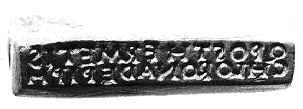
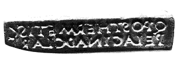

Q(uinti) Post(umii) Hermetis chloron ad epiph(oras)
"Collyre vert de Q. Postumius Hermès contre l'épiphora"
|
|
Lausanne, Musée
romain de Vidy.
No inv. non répertorié.
Plaque de stéatite vert olive. Dimensions: long. 3, 7
cm.
Deux tranches portent des inscriptions.
|

Q(uinti) Post(umii) Hermetis pelagin(um) ad clari(tatem)
"Collyre pélagin de Q. Postumius Hermès pour éclaircir
la vue". |
|
Un
cachet d'oculiste est une petite plaque en pierre servant à
estampiller les collyres destinés aux malades. Le texte
indique généralement le nom du médecin,
la composition et le mode d'emploi du médicament. Le
cachet de Vidy nous apprend ainsi qu'Hermès aurait mis
au point une recette contre l'inflammation de l'oeil (chloron
ad epiph(oras) et une formule pour éclaircir la vue
(pelagin(um) ad clari(tatem).
Retour à l'inscription
des médecins!
|